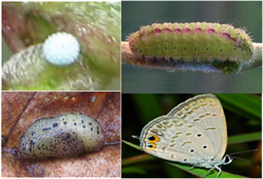

| Home |
| RED GRAM & CHICKPEA |
| 1. Gram pod borer |
| 2. blue butterfly |
| 3. grass blue butterfly |
| 4. plume moth |
| 5. Spotted pod borer |
| 6. spiny pod borer |
| 7. field bean pod borer |
| 8. pod fly |
| 9. stem fly |
| 10. eriophyid mite |
| 11. Blister beetle |
| 12. pod wasp |
| 13. flower webber |
| integrated Pest Management |
| questions |
| download notes |
PESTS OF PULSES - RED GRAM & CHICKPEA :: Major Pests :: Grass Blue Butterfly
3. Grass blue butterfly: Euchrysops cnejus (Lycaenidae: Lepidoptera)
Distribution and status: Throughout India. Regular pest
Host range: Blackgram, peas, redgram and lablab.
Damage symptoms: Buds, flowers and young pods with boreholes and presence of slug like caterpillar.
Bionomics: The adult butterfly is blue, medium sized with 5 black spots in the hind wings and two black spots in the inner margin. It lays 60-200 eggs singly on stem, pod, and leaf petioles. They hatch in 2-10 days.
 |
The pale green or yellow larva measures about 13 mm in length with a red line and short black hairs on the body. It feeds on flowers; flower stalks and enters the pod. The entry hole on the pod is plugged with excreta. The larval period is 10-21 days with four instars. It pupates in soil or between fallen leaves and debris of the plant for a period of 5-12 days.
Management for Blue butterfly
- Discourage dense or close planting.
- Avoid early or late sowing.
- Dig soil regularly during the period of infestation to kill larvae and pupae.
- Pick and destroy the larvae, pupae & adults.
- Release egg parasitoid Trichogramma sp.
- Conserve larval parasitoids Aploymia sp., Hyperencyrtus lycaenephila, Listrodromus crassipes.
- Chemicalcontrol measures are the same as redgram pod borer